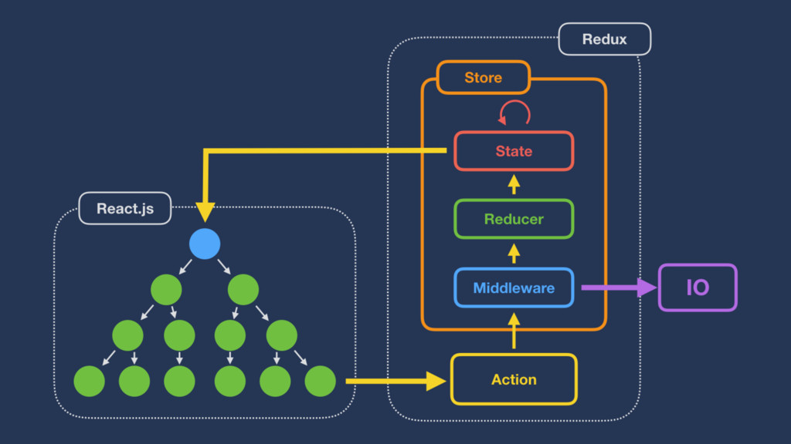

React

References¶
Intro¶
- Introduction To React // Speaker Deck
- ReactJS For Stupid People
- Isomorphic Web Apps and React.js
- Ajaxを劇的に簡単にするReact.js – @masuidrive blog
- reactjs - React 雑感 - Qiita
- React概論 // Speaker Deck
- React.js + Flux入門 #scripty02
Props & state¶
 - JSといえばjQueryだったWebデザイナーが、Reactを1年間使って感じたメリット | dwango creators' blog（ドワンゴクリエイターズブログ）
- JSといえばjQueryだったWebデザイナーが、Reactを1年間使って感じたメリット | dwango creators' blog（ドワンゴクリエイターズブログ）
Component ライフサイクル¶
 - React component ライフサイクル図 - Qiita
- React component ライフサイクル図 - Qiita
Learning¶
- Reactの公式チュートリアルをやってみた＆メモ - syonx
- Awesome React
- いま最も注目のライブラリ「React.js」でシングルページアプリケーションを作ってみよう！ 【前編】 （⅓）：CodeZine
- JavaScript - React.js 実戦投入への道 - Qiita
- O'Reilly Japan - 入門 React
- petehunt/react-howto
- petehunt/react-howto の日本語訳 - console.lealog();
React Router¶
reactjs/react-router: A complete routing library for React
- React Routerの公式チュートリアルがわかりやすかったよ - syonx
- React初心者のためのreact-routerの使い方 - ハッカーを目指す白Tのブログ
- React-Router with Flux - Jake Trent
- You might not need React Router — Medium
Flux¶
- reactjs - React.jsとFlux - Qiita
- ReactとFluxのこと // Speaker Deck
- ReactとFluxでクライアントサイドの設計 | KRAY Inc
- Fluxフレームワーク戦争の現状確認（前編） - マルシテイアは月の上
- Fluxフレームワーク戦争の現状確認（後編） - マルシテイアは月の上
- FluxのActionとStoreをちゃんと分ける話 - pixiv inside
- redux への 不満を解消する為に, flumptというFlux実装を作った - Qiita
- React+fluxを導入した話
Redux¶

- Reactive State Machine Japanese // Speaker Deck
- Introduction to Redux // Speaker Deck
- mizchi の Redux 考 - Togetterまとめ
- Coffee, jQueryで書いていたElectronアプリをES6, React, Reduxで書き直した - k0kubun's blog
- Reduxから見えてきた希望と課題 | eureka tech blog
- React + Redux入門初歩 実際に一からアプリを構築してみる - Qiita
- React、Redux、D3を用いたアニメーション | プログラミング | POSTD
- なぜReduxを使うのか // Speaker Deck
- Clean Architecture in React – Medium
- ReduxのExampleを徹底図解 | 人生と仕事を楽しむブログ
- React Reduxスターターキット - Qiita
- ReduxでのMiddleware不要論 - Qiita
- React&Reduxを牛丼屋に例えてみる図 - Qiita
- Reduxの正しい解釈の話 – Medium
MobX¶
Boilerplate¶
Style Guide¶
Tools¶
Components¶
- Material UI - Material Design React Components
-
- ReactJs-ReactNative-examples/examples/size-and-speed
Size and Speed
- ReactJs-ReactNative-examples/examples/size-and-speed
- D3 Components for React
- A carefully crafted datagrid for React
- テーブル描画コンポーネント。ハイパフォーマンス、列幅調整、列ON/OFFなど。
- gabrielbull/react-desktop · GitHub
- React UI Components for OS X El Capitan and Windows 10
- React Toolbox
- Bootstrap your application with beautiful Material Design Components
- Blueprint
- A React-based UI toolkit for the web
- Grommet
- The most advanced UX framework for enterprise applications. - Topology | Grommet
- React-Bootstrap
- Bootstrap 3 components built with React
- Ring UI
- JetBrainsのWeb UIコンポーネントをオープンソース化 | JetBrains ブログ
- Rebass
- 57 Configurable React Stateless Functional UI Components
- Office UI Fabric
- The official front-end framework for building experiences that fit seamlessly into Office and Office 365.
- Draft.js
- Rich Text Editor Framework for React
Styling¶
Modal¶
Sound¶
Articles¶
- 早く・それなりの UI を実現する React コンポーネントセット 16 選 - Qiita
- React.js in patterns
- ReactのUIコンポーネントライブラリの一覧表2017/5版 - Qiita
Examples¶
Articles¶
- React.jsを触った感想 - axross blog
- リアルな DOM はなぜ遅いのか - steps to phantasien
- reactjs - react-jadeでjadeテンプレートから仮想DOMを出力する - Qiita
- React.js: an interactive tutorial to get started
- React JS and why it's awesome
- Integrating D3.js visualizations in a React app - Nicolas Hery
- Using React.js to draw dynamic SVGs
- React / SVG / Canvas でパフォーマンス比較してみた。 - ましまろブログ
- React.jsをCoffeeScriptとjadeで書く | uzimith.github.io
- 3, 4 日で React を案件に導入(先っちょだけ)した話 - Qiita
- reactjs - javascript再勉強のためにreact + ardaでマインスイーパーをつくったので気づきを忘れないようにメモ - Qiita
- Reactのprops/stateとFluxのStore - mizchi's blog
- Reactを用いたアプリケーションアーキテクチャ：Fluxを再考する | プログラミング | POSTD
- #スーパーイカメーカー を支える技術 - console.lealog();
- Reactを使ったプロダクトのパフォーマンスを改善した話 | GMOメディア エンジニアブログ
- すべてのReact.js初心者が知っておくべき9つのポイント - Qiita
- その案件、Reactで本当に大丈夫ですか？ | eureka tech blog
- The state of React.js 2016 // Speaker Deck
- Reactの最新動向とベストプラクティス ── HTML5 Conference 2016セッションレポート | HTML5Experts.jp
Next.js¶
zeit/next.js: Framework for server-rendered React apps